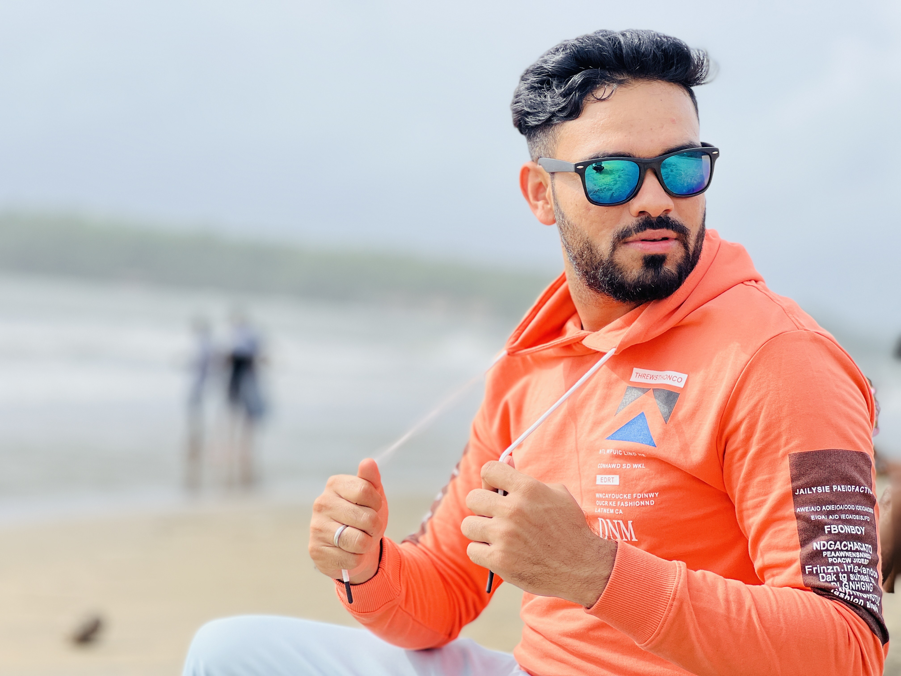

"Distinction in Computer Science and Engineering |
ECCTIS UK Approved as Bachelor (Honours) Degree"

About Me:
Bachelor of Engineer in Computer Science and Engineering with Solid
foundation in HTML, CSS, and JavaScript.
Professional Experience:
Customer Service Advisor (BT consumer Group - Leeds) February
2023 -Current
Provided exceptional customer support and assistance
to broadband customers, ensuring their technical and non-technical
issues were resolved promptly.
Demonstrated exceptional communication skills,
ensuring effective handling of customer inquiries and complex
problems.
Collaborated with cross-functional teams to optimize
customer service processes and enhance efficiency.
Maintained consistently high levels of customer satisfaction,
receiving positive feedback.
Adapted quickly to changing priorities and
managed high-stress
situations with professionalism.
Technical Skills:
Front-End Technologies: HTML5, CSS3, JavaScript
Back-End Technologies: Node.js
Version Control: Git and GitHub
Education and Work Experience:
2018-2022:
Preparation of Civil Services Examination in Gujarat, India.
Teaching part time General Studies subject to Civil services
Aspirant.
2015-2018:
Playing Cricket for National Cricket Club & Baroda Cricket
Association, India
Coaching cricket to under 17 years players of Cricket club based
in India
2010-2014:
Computer Science and Engineering (Bachelor of Engineering)
University : Gujarat Technological University, India
(Comparable to the bachelor (honours) degree in the UK Approved
by ECCTIS UK)
Grade: 75.80% - First class with Distinction
2010:
Higher Secondary certificate examination (Science Stream) –
INDIA
GSCE Maths equivalent in UK
(Comparable to GSCE/AS level (RQF level 3) in the UK Approved by
ECCTIS UK)